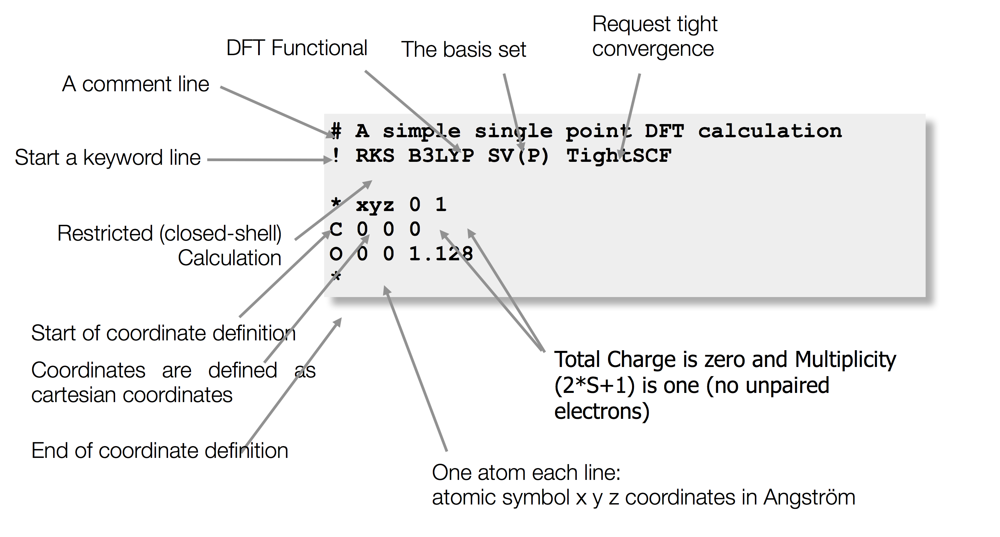

概要

1 |
|
注释部分
- 以#开头，若单独成行，则该行均为注释
也可用两个#在行内封装注释部分，如
1
TolE=1e-5; #Energy conv.# TolMaxP=1e-6; #Density conv.#
其中TolE和TolMaxP为正常的参数输入，而另外两处#内的内容为注释。
控制部分
- 所有block在手册6.1 Input Blocks中列出
- 以
%开头，end结尾。一个%和end的组合称为一个block，一个输入文件中可以包含多个blocks。 - block的内容比简单输入
！优先 ORCA中变量和数值的输入格式为
1
VariableName Value
也可以数组的形式输入变量，例如
1
2
3Array[1] Value1
Array[1] Value1,Value2,Value3
Array Value1,Value2- 由于ORCA是用C++写的，因此数组从0开始。上面第一行表示A[1]的值为V1，实际为该数组的第二个数；第二行表示A[1]的值为V1，A[2]的值为V2，A[3]的值为V3；第三行表示A[0]的值为V1，A[1]的值为V2。
字符型的数值（例如文件名）用双引号封装，如
1
MOInp "Myfile.gbw"
注意，在Unix系统中，引号中的内容是区分大小写的，MYFILE.GBW和MyFile.gbw是不同的文件，而在Windows系统中是不区分大小写的。
关键词部分
以!开头，主要用于指定作业的类型和相关参数。
- 主要方法和选项在6.2.1 Main Methods and Options的Table6.1 中列出
密度泛函方法在6.2.2 Density Functional Methods中的Table 6.2中列出
1
! Functional GridN NoFinalGrid VDW
泛函可以选择：
- LDA : LSD, HFS, …
- GGA : BP=BP86, PBE, PW91, OLYP, OPBE, BLYP, PWP, …
- LDAs/GGAs in RI mode require an auxiliary basis set (‘/J’)
- Meta-GGA : TPSS, revTPSS, M06L, …
- Hybrid : B3LYP, PBE0, X3LYP, BHandHLYP, B3P, B3PW, …
- Range-Sep. Hyb. : wB97, wB97X, CAM-B3LYP, LC-BLYP
- Hybrid Meta-GGA : TPSSh, TPSS0, M06, M062X, …
- Double-Hybrid : RI-B2PLYP, RI-MPW2PLYP, RI-B2T-PYLP, RI-B2K-PYLP, RI-B2GP-PLYP
- 没有RI近似也可以使用这些泛函。RI模式下的双杂化需要一个辅助基集(‘ /C ‘)
全局内存
This limit applies per processing core.
1
%MaxCore 3000
- 这里，每个内核3000 MB的内存分配给ORCA。如果请求使用6个CPU内核，这意味着ORCA的总内存需求为6x3000 = 18000 MB = 18 GB。为了确保计算节点具有可用的物理内存总量。 通常，您不应要求超过75％的可用物理内存（因为ORCA偶尔会使用比maxcore设置更多的内存）。因此，在这种情况下，如果计算机具有24 GB或更多的物理内存可用就可以
如果正在使用的计算节点也被其他用户使用，请确保请求的内存不要超过有权使用的内存。例如，如果一个12核节点具有120 GB的内存，而你提交了一个6核作业，则你有权使用该内存的一半（例如，请注意，有时排队系统要求您指定所需的内存量）。因此，仅应允许您的6核作业使用60 GB的内存或10,000 MB（10GB）的maxcore（每个核的内存）。由于ORCA中的内存使用率通常会超出maxcore，因此将maxcore降低至可用物理内存的〜75％：建议将maxcore设置为％maxcore 7500。
如果ORCA以一般消息终止：“ ORCA finished by error termination in [ORCA module]”，并且上面没有其他有用的消息， 原因取决于运行哪个ORCA模块。如果运行的模块是占用大量内存的模块，例如：orca_mp2，orca_scfhess，orca_mdci，orca_mrci等，则作业可能会耗尽内存或磁盘空间，或者访问内存或磁盘时出现问题。这也可能是运行一个具有过多内核的小型系统的计算的问题（运行一个仅包含几个原子的系统的60内核计算是没有意义的，并且会导致不可预测的结果）。
多步作业
ORCA支持在一个输入文件中设置多步作业，使用$new_job关键词来标记下一个作业的开始。多步作业常在以下类型的计算中会用到：
- 用不同的方法或基组计算同一个分子的性质。
- 用相同的参数计算一系列分子。
- 在结构优化之后用更高级的方法计算单点能或其他性质。
- 用小基组计算提供轨道的初始猜测，做大基组的计算。
eg：表示先在LDA水平下计算BO分子的g张量，再使用BP86泛函计算。
1 | # ----------------------------------------------------- |
在使用$new_job来设置多步作业时，下一步任务会默认使用前一步任务的所有参数设置。如果需要使用不同的参数，可以在下一步任务中修改相关参数。例如，在前一步计算中使用了RI近似，在后一步的计算中会默认使用，如果不想使用，则需要用关键词将其关闭。此外，下一步任务会默认使用上一步任务的轨道做初始猜测，如果在下一步任务中要使用其他的初始猜测，也要指定相关的关键词。
在ORCA的计算中，假设输入文件名为MyJob.inp，那么程序产生的所有的文件都名为MyJob.xxx。有时候在多步计算中，不同的步骤需要不同的文件名，可以通过%base这个变量来修改名称，例如:

- 第一步任务中产生的所有文件以FirstJob开头，第二步任务中产生的文件以SecondJob开头。
输入优先级别
不区分大小写
先读取所有！关键词，不分顺序
例外是如果基组指定两个，后面那个优先，辅助基组也是如此
1
2! def2-SVP def2-TZVP
! def2/J SARC/J
然后按输入文件中的block顺序读取，比！优先
大多数block输入关键字控制单个变量(尽管也有例外)。如果有重复的关键字，则使用后一个值。
1 | ! def2-TZVP UKS |
等同于
1 | ! UKS BLYP def2-SVP |